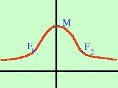

| Calcoliamo i punti di flesso per la seguente funzione (curva a campana di Gauss) y = e-x2 trovo la derivata prima y' = -2xe-x2 pongo la derivata prima uguale a zero(anche se sarebbe superfluo calcoliamo i punti di massimo e minimo) -2xe-x2 = 0 x = 0 ti ricordo che l'esponenziale non si annulla mai Sostituisco 0 nell'equazione iniziale per trovare la y del punto y(0) = e-02 = 1 P (0 , 1) trovo la derivata seconda yII = 2e-x2 (-1 + 2x2) sostituisco ad x il valore 0 per vedere se ho un massimo, un minimo o un flesso yII(0) = 2e-02 (-1 + 2·02) = -2 < 0 M (0 , 1) e' un massimo e lo chiamo M Pongo la derivata seconda uguale a zero per trovare i flessi 2e-x2 (-1 + 2x2) = 0 -1 + 2x2 = 0 2x2 = 1 x = Ho due possibili punti di flesso, ne calcolo la y sostituendo i valori trovati nell'equazione di partenza x = + y(+ = e-1/2 = 1/ Il primo punto e' F1( sostituisco ora x = - y(- = e-1/2 = 1/ Il secondo punto e' F2(- senza scomodare la derivata terza studiamo la concavita' con la derivata seconda ponendola maggiore di zero 2e-x2 (-1 + 2x2) > 0 -1 + 2x2 > 0 2x2 - 1 > 0 E' una disequazione di secondo grado verificata per valori esterni alle radici cioe' - + + + + + + - - - - - - - - - + + + + + + 

 Senza andare a fare troppi calcoli per trovare le tangenti di flesso puoi vedere qui di fianco un grafico approssimato della funzione considerata |